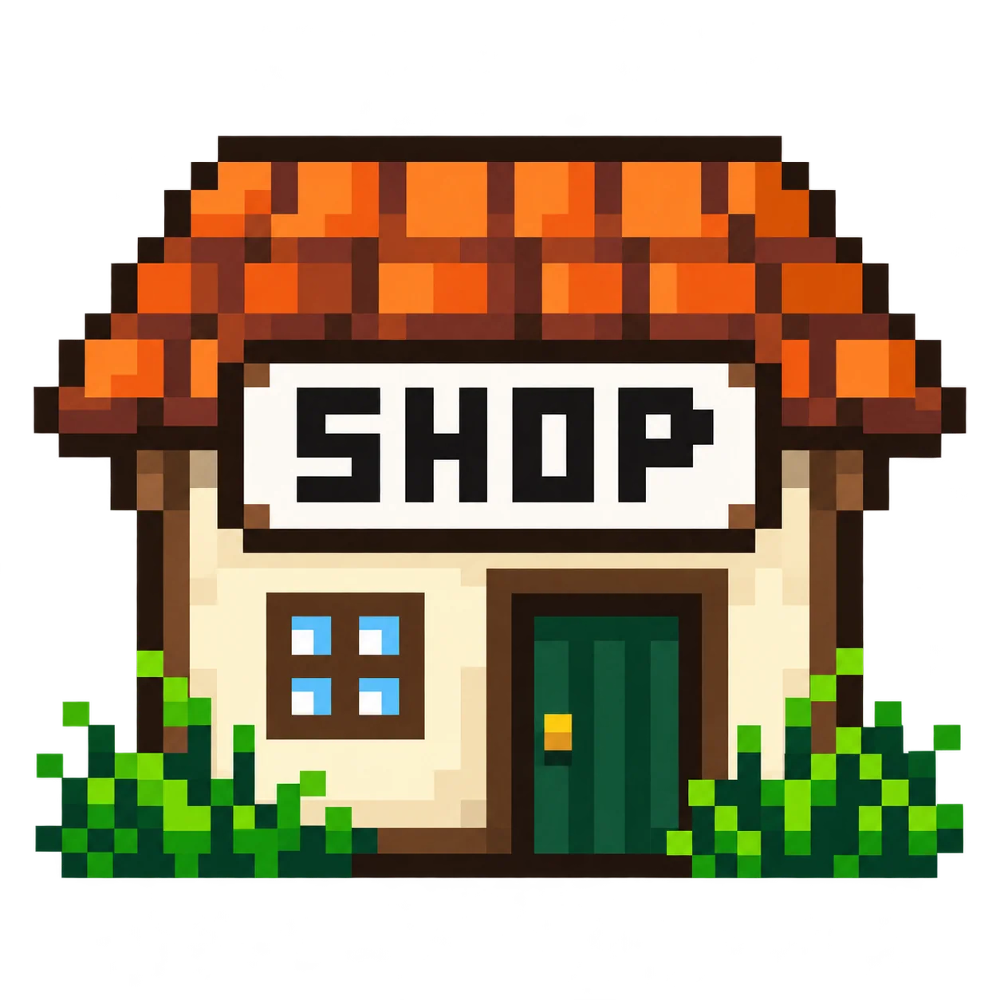

記念メダル
収集状況を読み込み中です。
記念メダルは偉業の証です。条件を満たした後、KUSAチップで鋳造すると永久コレクションになります。
カード詳細
ネームド詳細
簡単な紹介
kusaでよく見られる話題
特徴・アイコンの傾向
🌿 草むらプロフィール
草むらショップ
チップで補給 ／ 草彩片でデザインを錬成

🎮 草むら遊技場
遊びたいゲームを選んでください。
名鑑
ネームド一覧
- 001：🌱荒特
- 002：🌱アキネイター
- 003：🌱ウザミク
- 004：🌱笑顔族
- 005：🌱おえちゃんonis
- 006：🌱香川
- 007：🌱顔晒し
- 008：🌱きい
- 009：🌱キルリヤ大佐
- 010：🌱ゴエモン
- 011：🌱ゴールドタイガー
- 012：🌱サツヨコ
- 013：🌱小6
- 014：🌱しそういQR
- 015：🌱擦り寄り
- 016：🌱全肯定
- 017：🌱拓也
- 018：🌱千歳
- 019：🌱中受
- 020：🌱チュバシャド
- 021：🌱チカブラバン
- 022：🌱デカキン
- 023：🌱長門
- 024：🌱虹神
- 025：🌱にゃむ
- 026：🌱猫jk
- 027：🌱ノープ
- 028：🌱バッドテト
- 029：🌱兵庫受験生_PBだけど
- 030：🌱ふぁぼふむ
- 031：🌱ぷゆぷゆパンガイ
- 032：🌱ベータちゃん
- 033：🌱ぺこら
- 034：🌱ホイ卒包丁おじ
- 035：🌱ミク絵師
- 036：🌱ユニコーン
- 037：🌱らべんだーラテアート
- 038：🌱霊王
- 039：🌱ロゼ
- 040：🌱ロリガイ
- 041：🌱ワイテjc
- 042：🌱ヴァロキチ
- 043：🌱一日五食ガイジ
- 044：🌱コロッケガイジ
- 045：🌱ことわざバトルガイジ
- 046：🌱タラタラガイジ
- 047：🌱カリカリガイジ
- 048：🌱ぷゆガイ
- 049：🌱全肯定おじ
- 050：🌱全肯定お兄さん
- 051：🌱赤ゆに
- 052：🌱サツヨコピングー
- 053：🌱チュパカブラ
- 054：🌱きぃうぃ
- 055：🌱ビビアミ
- 056：🌱エジプト壁画ガイジ
- 057：🌱リコーダーガイジ
- 058：🌱クウガイジ
- 059：🌱きんたま奇数個ガイジ
- 060：🌱ぷゆゆ特化の可愛い魔法シャドバンガイジ
- 061：🌱失言ニキ
- 062：🌱ショタコン
- 063：🌱むほほおじさん
- 064：🌱シオン
- 065：🌱トリッカル
- 066：🌱ガチンコマン
- 067：🌱従来型コーディングガイジ
- 068：🌱バイブコーディングガイジ
- 069：🌱二十日帰庫
6時間に1回、草むらからカードを1枚発見できます。抽選結果はこのブラウザ内にだけ保存されます。
🌿 草パチ FACE BALL EDITION
顔の球が釘を跳ねながら落ちていく、草むらのパチンコ台。
遊ぶパチンコ台を選択
さんの草・称号は共通です。持ち球と遊技記録は台ごとに保存されます。
白い世界の記憶
🌿 草の交換所
ガチャ券 0枚（選択中プレイヤー）1球＝1草。持ち球と草を、好きな数だけ相互に交換できます。
交換する球数を入力してください。
球に戻す草の数を入力してください。
15,000草でガチャ券1枚。6時間ごとの無料ガチャも引き続き利用できます。
遊び方
- まずは発射：1・5・10草パチから掛け金を選び、ハンドルで強さを調整して発射します。1発につき掛け金と同じ数の球を消費します。
- 入賞と待機：左右の入賞口と中央のSTARTで球を獲得します。START受付は回転中を含め最大4個で、待機表示は個数と順番だけを示します。各回転の消化開始時に、その時点のモード・設定で抽選します。期待度演出は回転中の液晶だけに表示し、激アツ演出で外れた場合は受付時の掛け金1発分を返球します。未消化分と進行中の回転は保存され、再開時に引き継ぎます。
- START連続入賞：10秒以内に続けてSTARTへ入れると継続。3回連続入賞達成時にSTART賞球が掛け金1球分増加し、5・10・20回連続入賞で演出が変化します。
- 大当たり後：通常大当たり後は10回転の草ST。ST中の大当たり、超大当たり、ジャックポット後は15回転の草RUSHに入ります。終了後は5回転の草時短となり、START賞球が掛け金1球分増えます。1草パチの払い出しは通常4Rが100球・10Rが150球、ST・RUSH中4Rが1,500球・8Rが1,900球・10Rが2,500球、超大当たりが2,500球です。5草・10草パチではそれぞれ5倍・10倍になります。ST中の引き戻し率は約65.8％、RUSHの継続率は約80％で、RUSH中に当たるたび残り15回転に戻ります。ジャックポットを除く当たりの1％が超大当たりです。
- モード抽選：開始時は通常45％・夜25％・お祭り15％・闇鍋12％・ぷゆゆラッシュ3％で抽選。通常抽選中のSTARTを15回消化すると、次のSTARTで継続を判定します。
- モード継続：継続率は通常35％、夜・お祭り・闇鍋50％、ぷゆゆラッシュ20％。成功すると同じモードを15回転延長し、継続回数を表示します。失敗すると現在以外のモードへ切り替わります。草ST・草RUSH・草時短・ジャックポット祭中は判定を休止し、終了後の次のSTARTで判定します。
- 各モードの効果：サイド入賞は掛け金1球分、STARTは基本1球分。夜の草むらはチャンス草ランプが少し出やすく、お祭りはSTART賞球が掛け金1球分増加。闇鍋はSTART賞球が掛け金0〜2球分変動します。ぷゆゆラッシュは球が🥺だけになり、START賞球が掛け金1球分増加。通常時の当たり確率は1.5倍、ST/RUSH中は高確率です。釘の配置はどのモードも同じです。
- ジャックポット：通常時のSTART抽選で1/20,000。1草パチで50万球、5草パチで150万球、10草パチで1,000万球を、発射50回に分けて払い出します。その後のジャックポット祭は10回転。祭中のSTART入賞には10,000球を上乗せし、10回とも超大当たりが確定します。祭中の超大当たり賞球は従来どおり、1草パチで500球（5草・10草パチでは5倍・10倍）です。
- 記録と交換：「結果を見る」で記録と称号を確認できます。持ち球は1球＝1草で交換でき、15,000草でガチャ券1枚と交換できます。球・草・記録はブラウザに自動保存されます。
- 24時間ランキング：発射ボタン下の「24時間ランキングを見る」を押すと、最新の順位を中央に表示します。1・5・10草パチ別に、日本時間の本日0:00〜23:59に遊技で増やした球数を競います。球の補充や交換は順位に含まれません。接続できない間の記録は端末に保存し、後で送信します。
📊 草パチ結果
獲得は賞球を1球＝1草で換算した値です。所持草とは別に記録します。新しい計測項目はこの試作から数えます。
今回のプレイ
累計・自己ベスト
称号コレクション
効果音の出典
従来の球音は鋼球が転がる録音（swordofkings128）と短い金属打音（Ryanz-Official）を軽く編集しました。大当たり音は実機の得点機構（schafferdavid）です。モード効果音とジャックポット専用音はKenneyのInterface Sounds、Impact Sounds、Casino Audioを使用。すべてCC0で商用利用可、音楽はありません。
🌱 育成・カード管理を開く奉納・錬成・カプセル開封・草化・称号
🎁 カプセル所持品
獲得したカプセルを保管します。未開封：0個。品質を選んでまとめて開封できます。
🌱 育成・奉納
ダブりカードやチップを捧げて草位を上げます。図鑑の最初の1枚は残ります。
⚒️ カード工房
分解で素材を集め、加工・覚醒へ進めます。最初の1枚は残ります。
♻️ 草化
Lv.50後に100,000草と5,000チップを捧げます。チップ・ゲージ・レベル・盤面をリセットします。図鑑、加工、取得済みカプセル、称号は残り、未獲得カプセルは新しい盤面へ再投入されます。
🏆 遊技記録・称号
草パチ・ガラスの少女で獲得した記録と称号を表示します。
🌱 要望BOX
ネームドの追加・名前の修正・掲載漏れ・削除依頼などがある場合は、 こちらから管理人「作曲家」へ匿名で情報を送れます。
🌿 要望BOXを開く ポップアップが開かない場合は 要望BOXを別ページで開く